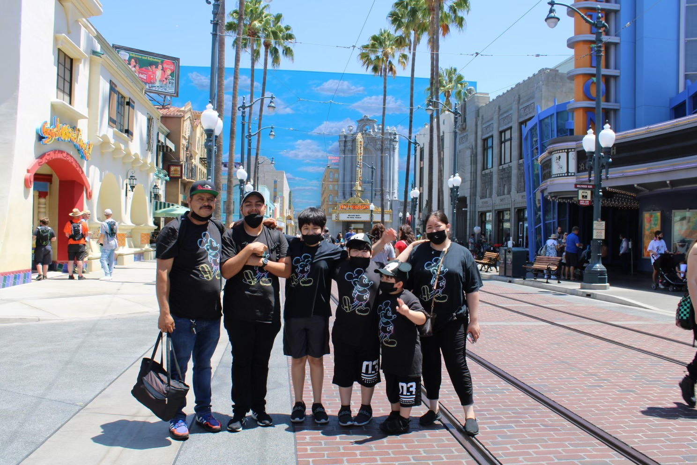
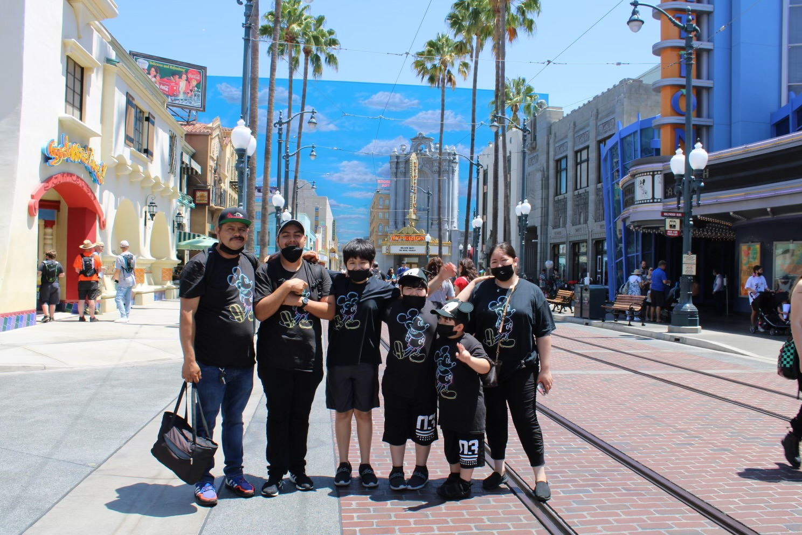
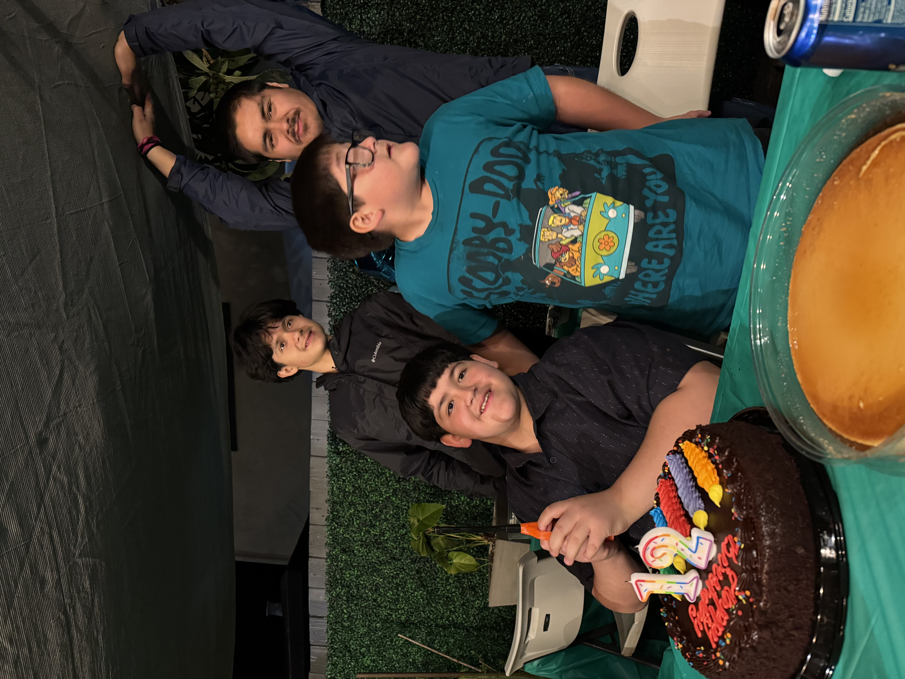
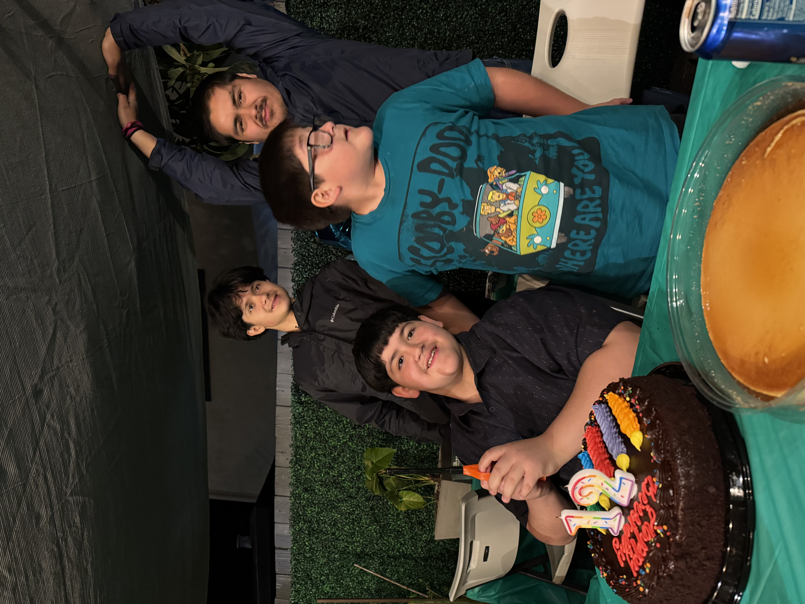
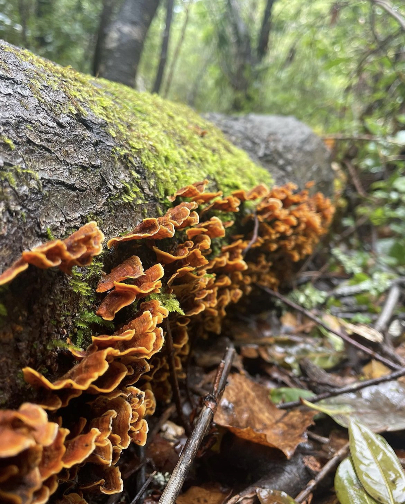
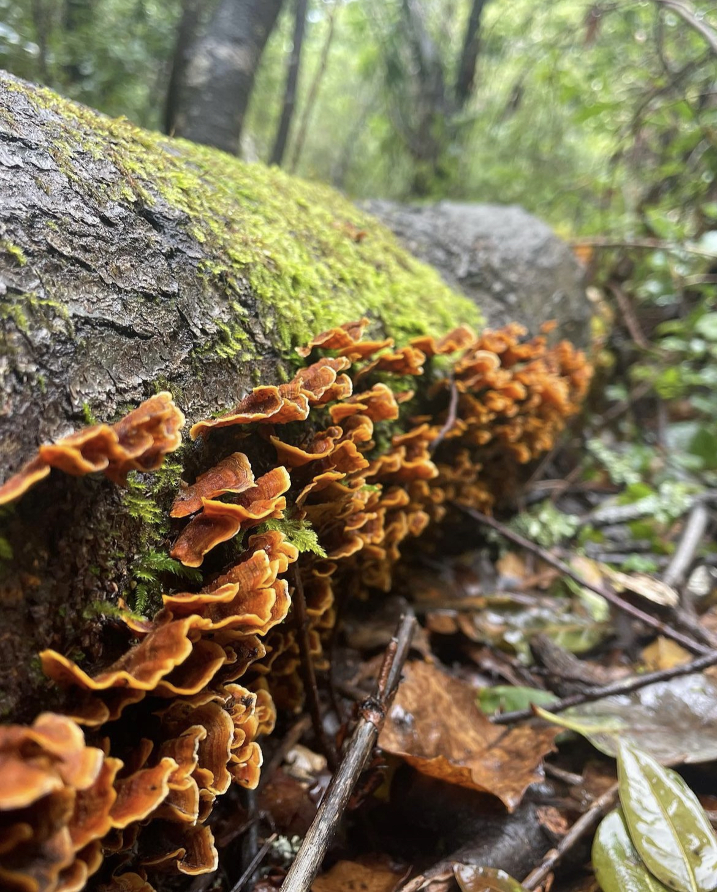
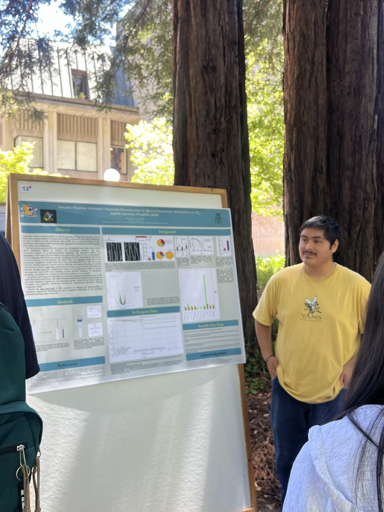
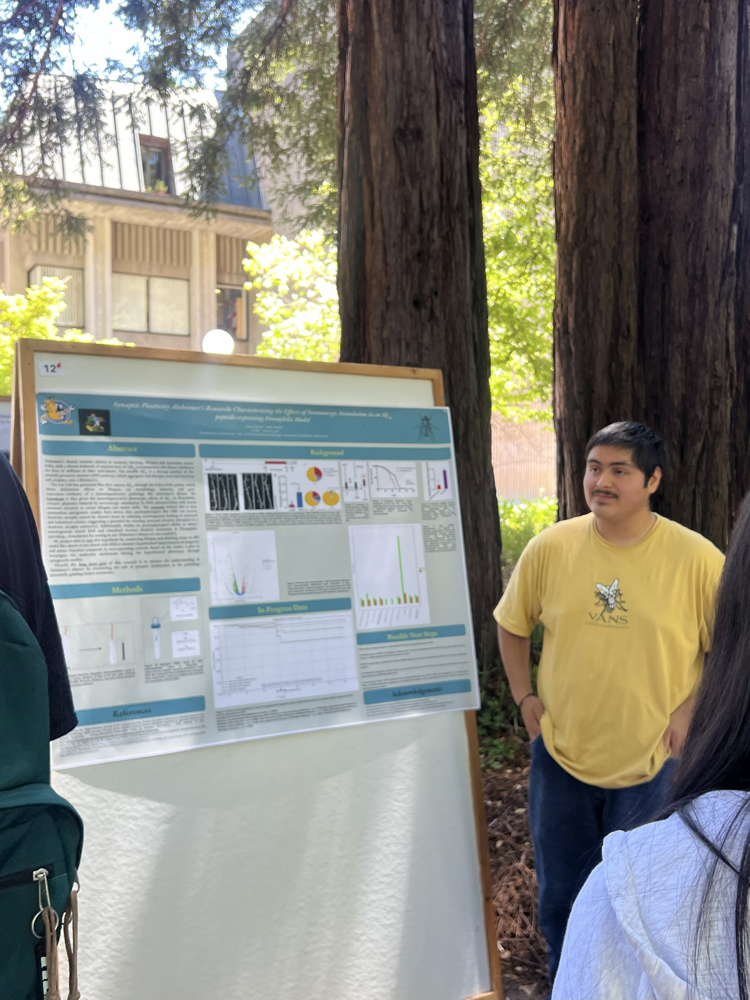

Synaptic Plasticity in Alzhiemer's Research (SPAR)
Slide Deck • 2025
Independent project I developed in Dr Lee's lab exploring how a psychoplastogen (DOI) modulates synaptic dysfunction in an fly AD model,
includes background, experimental design, and preliminary findings.
Synaptic Plasticity in Alzhiemer's Research (SPAR)
Poster • UCSC’s Science Day Undergraduate Research Poster Symposium • 2025
Poster presentation with early lifespan data that later was invalidated due to unexpected control outcomes.
SPAR: NIH R21 Style Mock Grant Proposal
Proposal Draft • Biol 186l Course at UCSC • 2025
Based on my independent project, contains a structured proposal outlining hypotheses, aims, approaches, potential pitfalls and alternative strategies complete with mock figures and supporting literature citations.
SPAR: Research That Inspired SPAR's Creation
Literature Presentation • Lee lab at UCSC • 2025
Based my independent project in part from Lu, J., Tjia, M., Mullen, B. et al. An analog of psychedelics restores functional neural circuits disrupted by unpredictable stress., contains a pitch at the end for SPAR's potential.
Mutated Amyloid Peptide (MAP)
Poster Presentation • Genetics Society of America (66th Annual Drosophila Research Conference) • Team Project • 2025
Rational Aβ42 Missense Mutations characterized in a Drosophila AD Model. Presented in San Diego California.
Mutated Amyloid Peptide (MAP)
Lifespan Findings Slide Deck • Team Project • 2024
Rational Aβ42 Missense Mutations characterized in a Drosophila AD Model. Lifespan assay uncovered significant lifespan rescues building off prior in vitro work done in our Dr Raskatov Jevgenij's lab at UCSC in the Biochemistry & Chemistry Department.
MAP
Poster Presentation • STEM Diversity at UCSC’s 2024 Annual Summer Research Symposium • Team Project • 2025
First poster presentation I presented to peers and supervisors in STEM Diversity research programs and UCSC. Encapsulates ongoing work that I joined during that time.
Course-based: BME 128 - Improving Conductivity in Geobacter PilA-N Protein
Mock Proposal • UCSC • Team Project • 2025
Using multiple sequence alignment and PyMol predictions, we proposed a novel approach towards increasing electron Conductivity of the bacterial protien, PilA-N. Supported by literature, figures, and testable means.
Course-based: BME 128 - Improving Conductivity in Geobacter PilA-N Protein
Slide Deck Proposal • UCSC • Team Project • 2025
Slide deck pitched as an investment mock-style presentation to course professor and class for grade.
Course-based: Biol 101l - Expressing, purifying, and validating a GST-EGFP fusion protein
Slide Deck Proposal • UCSC • Team Project • 2025
Constructed recombinant plasmids, transformed cells, purified expressed protein, and verified each step with relevant molecular & biochemical assays. Authored a full experimental report integrating reasoning, results, and interpretation, concluding that “the unknown protein is a fusion protein.”

 

 



 


 
